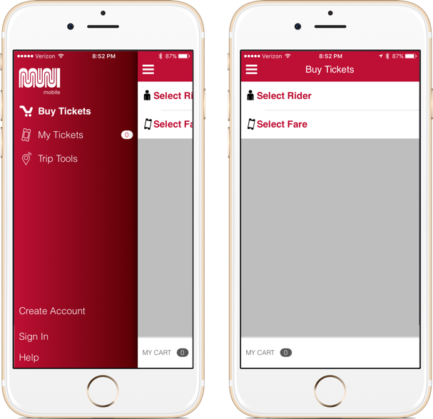
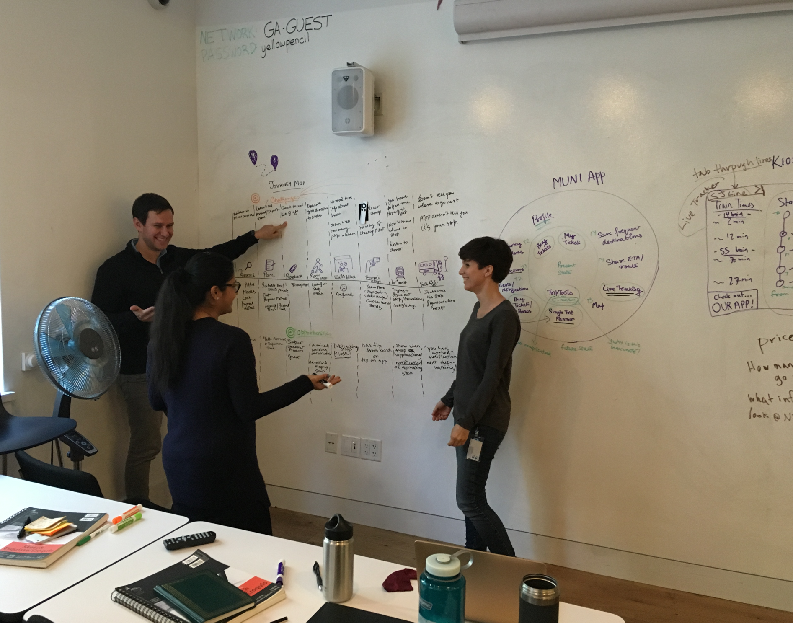
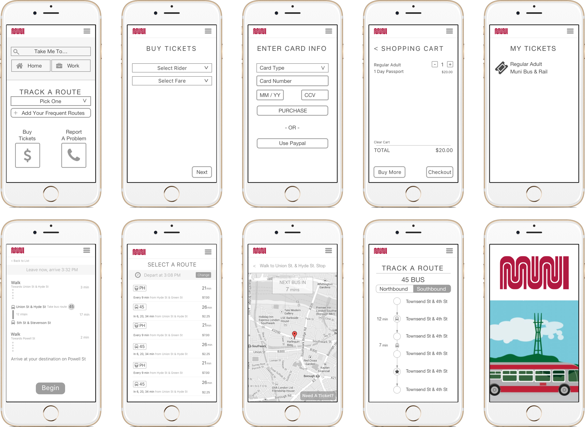

MUNI
San Francisco Public Transportation App Redesign
The current app...you can ONLY buy tickets
About The Project
This was a class project with the goal of increasing off-peak MUNI ridership through a digital offering. I worked with two other designers during a three week sprint.
Process
We began with whiteboarding potential ideas, features, based on current functionality.

At this point we had survey results and information from in-person interviews. We realized that we needed to map out types of off-peak potential riders and why they weren't riding. We had thought people weren't riding because of safety issues, but discovered this wasn't the case. The app needed to be built to increase convenience.
We created a journey map for riders
Next, we worked out user flows for the app

I began sketching and annotating potential features within the sketches.

Lastly, I built some light wireframes to take into the next phase of the project.
